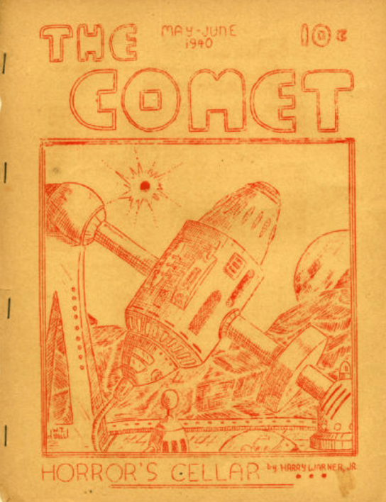

Remi Lamb
Vector Over Photography
Zine and Photocopy

Walter Dennis
Zine and Photocopy
The First Major Zine
Raymond A. Palmer
The first major fanzine to be made was
The Comet
made by Raymond Palmer and Walter Dennis. It would later be renamed to
Cosmology after its fourth issue and it was based around science
fiction. It was the official news letter of Science Correspondence Club.


Punk Planet
Maxilla
At The Center Of The Volcano
Punk Planet was a zine that focused on the Punk sub culture. It was posted
from 1994 till 2007.
Credit; Internet Archive
Founded in 2014 by Lotte Anderson.
At the Center of the Volcano would be made by Dominique Misein from
2000-2009.